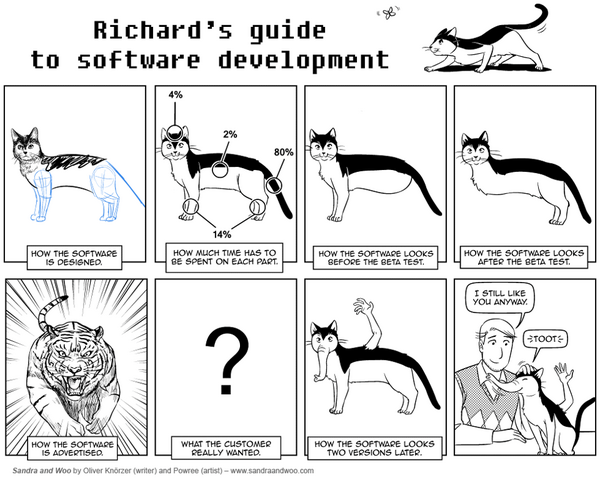

Practical Wicket
Wicket hat sich als ernstzunehmendes Framework für die Entwicklung von komplexen Informationssystemen etabliert. UI-Komponenten lassen sich einfach und intuitiv entwickeln, der Support durch die Community aus Anwendern und Entwicklern ist ausgezeichnet.
Diese Merkmale sind aber häufig nicht die ausschlaggebenden Argumente für oder wider den Einsatz eines Frameworks. Meist steht die Integration in eine vorgegeben Infrastruktur aus Frameworks, Entwicklungsrichtlinien, Wissensstand der Mitarbeiter an erster Stelle bei den Auswahlkriterien.
Welch gute Figur dabei Wicket macht zeigen wir anhand diverser Beispiele aus unserer täglichen Praxis. Von der Zusammenarbeit mit diversen Peristenzframeworks, Wickets Integration mit Spring oder CDI, der Integration von JQuery bis hin zur Arbeitserleichterung mit IDE-Plugins - anhand von konkreten Beispielen zeigen wir wie einfach die Arbeit mit Wicket sein kann.
We are...
Bert Radke +BertRadke
XML is like violence. If it doesn't solve your problem, you're not using enough of it.
Marco Grunert @magomi
An optimist person will say that the glass is half-full.
A pessimist person will say that the glass is half-empty.
A programmer will say that the glass is twice as large as necessary.
Once upon a time...
- 2005: Wicket 1.0
- ...
- 2010: Wicket 1.5
- 2012: Wicket 6
- 2014: Wicket 7 beta
Why Wicket?
- Models sind Pojo
- Separation of Concerns
- Secure
- Reusable Components
- ...
- http://wicket.apache.org/meet/features.html
To be continued...
Source Code Sample
public class WicketApplication extends WebApplication {
/**
* @see org.apache.wicket.Application#getHomePage(
*/
@Override
public Class getHomePage() {
return HomePage.class;
}
/**
* @see org.apache.wicket.Application#init(
*/
@Override
public void init() {
super.init();
mountPage("page1", Page1.class);
mountPage("page2", Page2.class);
}
}
Image Sample (1)

Image Sample (2)